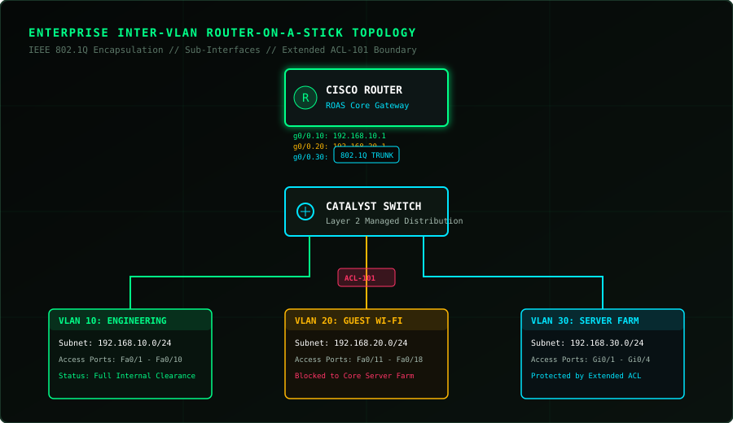

01 // SYS.PROJ
NETWORK INFRASTRUCTURE
Enterprise Inter-VLAN Network Design
Designed and verified a multi-department enterprise network using Cisco Packet Tracer. Built with IEEE 802.1Q trunking, Router-on-a-Stick (ROAS), DHCP pools, and security filtering using Extended ACLs.
Cisco Packet Tracer
VLAN
802.1Q Trunking
Inter-VLAN Routing
Extended ACL
DHCP